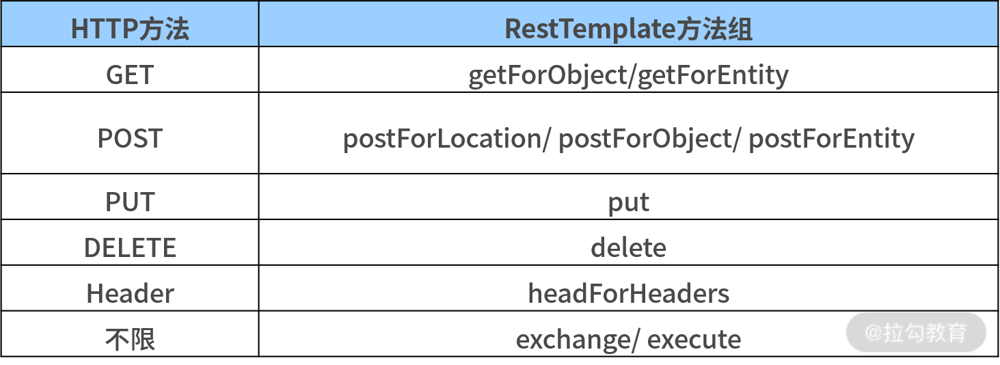

- 00 开篇词 从零开始：为什么要学习 Spring Boot？.md.html
- 01 家族生态：如何正确理解 Spring 家族的技术体系？.md.html
- 02 案例驱动：如何剖析一个 Spring Web 应用程序？.md.html
- 03 多维配置：如何使用 Spring Boot 中的配置体系？.md.html
- 04 定制配置：如何创建和管理自定义的配置信息？.md.html
- 05 自动配置：如何正确理解 Spring Boot 自动配置实现原理？.md.html
- 06 基础规范：如何理解 JDBC 关系型数据库访问规范？.md.html
- 07 数据访问：如何使用 JdbcTemplate 访问关系型数据库？.md.html
- 08 数据访问：如何剖析 JdbcTemplate 数据访问实现原理？.md.html
- 09 数据抽象：Spring Data 如何对数据访问过程进行统一抽象？.md.html
- 10 ORM 集成：如何使用 Spring Data JPA 访问关系型数据库？.md.html
- 11 服务发布：如何构建一个 RESTful 风格的 Web 服务？.md.html
- 12 服务调用：如何使用 RestTemplate 消费 RESTful 服务？.md.html
- 13 服务调用：如何正确理解 RestTemplate 远程调用实现原理？.md.html
- 14 消息驱动：如何使用 KafkaTemplate 集成 Kafka？.md.html
- 15 消息驱动：如何使用 JmsTemplate 集成 ActiveMQ？.md.html
- 16 消息驱动：如何使用 RabbitTemplate 集成 RabbitMQ？.md.html
- 17 安全架构：如何理解 Spring 安全体系的整体架构？.md.html
- 18 用户认证：如何基于 Spring Security 构建用户认证体系？.md.html
- 19 服务授权：如何基于 Spring Security 确保请求安全访问？.md.html
- 20 服务监控：如何使用 Actuator 组件实现系统监控？.md.html
- 21 指标定制：如何实现自定义度量指标和 Actuator 端点？.md.html
- 22 运行管理：如何使用 Admin Server 管理 Spring 应用程序？.md.html
- 23 数据测试：如何使用 Spring 测试数据访问层组件？.md.html
- 24 服务测试：如何使用 Spring 测试 Web 服务层组件？.md.html
- 结束语 以终为始：Spring Boot 总结和展望.md.html
12 服务调用：如何使用 RestTemplate 消费 RESTful 服务？
11 讲我们介绍了如何使用 Spring Boot 构建 RESTful 风格 Web 服务的实现方法，而 SpringCSS 案例系统的演进过程也从单个服务上升到多个服务之间的交互。
完成 Web 服务的构建后，我们需要做的事情就是如何对服务进行消费，这也是 12讲我们介绍的要点，接下来我们将基于 RestTemplate 模板工具类来完成这一目标。
使用 RestTemplate 访问 HTTP 端点
RestTemplate 是 Spring 提供的用于访问 RESTful 服务的客户端的模板工具类，它位于 org.springframework.web.client 包下。
在设计上，RestTemplate 完全可以满足 11 讲中介绍的 RESTful 架构风格的设计原则。相较传统 Apache 中的 HttpClient 客户端工具类，RestTemplate 在编码的简便性以及异常的处理等方面都做了很多改进。
接下来，我们先来看一下如何创建一个 RestTemplate 对象，并通过该对象所提供的大量工具方法实现对远程 HTTP 端点的高效访问。
创建 RestTemplate
如果我们想创建一个 RestTemplate 对象，最简单且最常见的方法是直接 new 一个该类的实例，如下代码所示：
@Bean
public RestTemplate restTemplate(){
return new RestTemplate();
}
这里我们创建了一个 RestTemplate 实例，并通过 @Bean 注解将其注入 Spring 容器中。
通常，我们会把上述代码放在 Spring Boot 的 Bootstrap 类中，使得我们在代码工程的其他地方也可以引用这个实例。
下面我们查看下 RestTemplate 的无参构造函数，看看创建它的实例时，RestTemplate 都做了哪些事情，如下代码所示：
public RestTemplate() {
this.messageConverters.add(new ByteArrayHttpMessageConverter());
this.messageConverters.add(new StringHttpMessageConverter());
this.messageConverters.add(new ResourceHttpMessageConverter(false));
this.messageConverters.add(new SourceHttpMessageConverter<>());
this.messageConverters.add(new AllEncompassingFormHttpMessageConverter());
//省略其他添加 HttpMessageConverter 的代码
}
可以看到 RestTemplate 的无参构造函数只做了一件事情，添加了一批用于实现消息转换的 HttpMessageConverter 对象。
我们知道通过 RestTemplate 发送的请求和获取的响应都是以 JSON 作为序列化方式，而我们调用后续将要介绍的 getForObject、exchange 等方法时所传入的参数及获取的结果都是普通的 Java 对象，我们就是通过使用 RestTemplate 中的 HttpMessageConverter 自动帮我们做了这一层转换操作。
这里请注意，其实 RestTemplate 还有另外一个更强大的有参构造函数，如下代码所示：
public RestTemplate(ClientHttpRequestFactory requestFactory) {
this();
setRequestFactory(requestFactory);
}
从以上代码中，我们可以看到这个构造函数一方面调用了前面的无参构造函数，另一方面可以设置一个 ClientHttpRequestFactory 接口。而基于这个 ClientHttpRequestFactory 接口的各种实现类，我们可以对 RestTemplate 中的行为进行精细化控制。
这方面典型的应用场景是设置 HTTP 请求的超时时间等属性，如下代码所示：
@Bean
public RestTemplate customRestTemplate(){
HttpComponentsClientHttpRequestFactory httpRequestFactory = new HttpComponentsClientHttpRequestFactory();
httpRequestFactory.setConnectionRequestTimeout(3000);
httpRequestFactory.setConnectTimeout(3000);
httpRequestFactory.setReadTimeout(3000);
return new RestTemplate(httpRequestFactory);
}
这里我们创建了一个 HttpComponentsClientHttpRequestFactory 工厂类，它是 ClientHttpRequestFactory 接口的一个实现类。通过设置连接请求超时时间 ConnectionRequestTimeout、连接超时时间 ConnectTimeout 等属性，我们对 RestTemplate 的默认行为进行了定制化处理。
使用 RestTemplate 访问 Web 服务
在远程服务访问上，RestTemplate 内置了一批常用的工具方法，我们可以根据 HTTP 的语义以及 RESTful 的设计原则对这些工具方法进行分类，如下表所示。

RestTemplate 中的方法分类表
接下来，我们将基于该表对 RestTemplate 中的工具方法进行详细介绍并给出相关示例。不过在此之前，我们想先来讨论一下请求的 URL。
在一个 Web 请求中，我们可以通过请求路径携带参数。在使用 RestTemplate 时，我们也可以在它的 URL 中嵌入路径变量，示例代码如下所示：
("http://localhost:8082/account/{id}", 1)
这里我们对 account-service 提供的一个端点进行了参数设置：我们定义了一个拥有路径变量名为 id 的 URL，实际访问时，我们将该变量值设置为 1。其实，在URL 中也可以包含多个路径变量，因为 Java 支持不定长参数语法，多个路径变量的赋值可以按照参数依次设置。
如下所示的代码中，我们在 URL 中使用了 pageSize 和 pageIndex 这两个路径变量进行分页操作，实际访问时它们将被替换为 20 和 2。
("http://localhost:8082/account/{pageSize}/{pageIndex}", 20, 2)
而路径变量也可以通过 Map 进行赋值。如下所示的代码同样定义了拥有路径变量 pageSize 和 pageIndex 的 URL，但实际访问时，我们会从 uriVariables 这个 Map 对象中获取值进行替换，从而得到最终的请求路径为http://localhost:8082/account/20/2。
Map<String, Object> uriVariables = new HashMap<>();
uriVariables.put("pageSize", 20);
uriVariables.put("pageIndex", 2);
webClient.getForObject() ("http://localhost:8082/account/{pageSize}/{pageIndex}", Account.class, uriVariables);
请求 URL 一旦准备好了，我们就可以使用 RestTemplates 所提供的一系列工具方法完成远程服务的访问。
我们先来介绍 get 方法组，它包括 getForObject 和 getForEntity 这两组方法，每组各有三个方法。
例如，getForObject 方法组中的三个方法如下代码所示：
public <T> T getForObject(URI url, Class<T> responseType)
public <T> T getForObject(String url, Class<T> responseType, Object... uriVariables){}
public <T> T getForObject(String url, Class<T> responseType, Map<String, ?> uriVariables)
从以上方法定义上，我们不难看出它们之间的区别只是传入参数的处理方式不同。
这里，我们注意到第一个 getForObject 方法只有两个参数（后面的两个 getForObject 方法分别支持不定参数以及一个 Map 对象），如果我们想在访问路径上添加一个参数，则需要我们构建一个独立的 URI 对象，示例如下代码所示：
String url = "http://localhost:8080/hello?name=" + URLEncoder.encode(name, "UTF-8");
URI uri = URI.create(url);
我们先来回顾下 12 讲中我们介绍的 AccountController，如下代码所示：
@RestController
@RequestMapping(value = "accounts")
public class AccountController {
@GetMapping(value = "/{accountId}")
public Account getAccountById(@PathVariable("accountId") Long accountId) {
…
}
}
对于上述端点，我们可以通过 getForObject 方法构建一个 HTTP 请求来获取目标 Account 对象，实现代码如下所示：
Account result = restTemplate.getForObject("http://localhost:8082/accounts/{accountId}", Account.class, accountId);
当然，我们也可以使用 getForEntity 方法实现同样的效果，但在写法上会有所区别，如下代码所示：
ResponseEntity<Account> result = restTemplate.getForEntity("http://localhost:8082/accounts/{accountId}", Account.class, accountId);
Account account = result.getBody();
在以上代码中，我们可以看到 getForEntity 方法的返回值是一个 ResponseEntity 对象，在这个对象中还包含了 HTTP 消息头等信息，而 getForObject 方法返回的只是业务对象本身。这是这两个方法组的主要区别，你可以根据个人需要自行选择。
与 GET 请求相比，RestTemplate 中的 POST 请求除提供了 postForObject 和 postForEntity 方法组以外，还额外提供了一组 postForLocation 方法。
假设我们有如下所示的 OrderController ，它暴露了一个用于添加 Order 的端点。
@RestController
@RequestMapping(value="orders")
public class OrderController {
@PostMapping(value = "")
public Order addOrder(@RequestBody Order order) {
Order result = orderService.addOrder(order);
return result;
}
}
那么，通过 postForEntity 发送 POST 请求的示例如下代码所示：
Order order = new Order();
order.setOrderNumber("Order0001");
order.setDeliveryAddress("DemoAddress");
ResponseEntity<Order> responseEntity = restTemplate.postForEntity("http://localhost:8082/orders", order, Order.class);
return responseEntity.getBody();
从以上代码中可以看到，这里我们构建了一个 Order 实体，通过 postForEntity 传递给了 OrderController 所暴露的端点，并获取了该端点的返回值。（特殊说明：postForObject 的操作方式也与此类似。）
掌握了 get 和 post 方法组后，理解 put 方法组和 delete 方法组就会非常容易了。其中 put 方法组与 post 方法组相比只是操作语义上的差别，而 delete 方法组的使用过程也和 get 方法组类似。这里我们就不再一一展开，你可以自己尝试做一些练习。
最后，我们还有必要介绍下 exchange 方法组。
对于 RestTemplate 而言，exchange 是一个通用且统一的方法，它既能发送 GET 和 POST 请求，也能用于发送其他各种类型的请求。
我们来看下 exchange 方法组中的其中一个方法签名，如下代码所示：
public <T> ResponseEntity<T> exchange(String url, HttpMethod method, @Nullable HttpEntity<?> requestEntity, Class<T> responseType, Object... uriVariables) throws RestClientException
请注意，这里的 requestEntity 变量是一个 HttpEntity 对象，它封装了请求头和请求体，而 responseType 用于指定返回数据类型。 假如前面的 OrderController 中存在一个根据订单编号 OrderNumber 获取 Order 信息的端点，那么我们使用 exchange 方法发起请求的代码就变成这样了，如下代码所示。
ResponseEntity<Order> result = restTemplate.exchange("http://localhost:8082/orders/{orderNumber}", HttpMethod.GET, null, Order.class, orderNumber);
而比较复杂的一种使用方式是分别设置 HTTP 请求头及访问参数，并发起远程调用，示例代码如下所示：
//设置 HTTP Header
HttpHeaders headers = new HttpHeaders();
headers.setContentType(MediaType.APPLICATION_JSON_UTF8);
//设置访问参数
HashMap<String, Object> params = new HashMap<>();
params.put("orderNumber", orderNumber);
//设置请求 Entity
HttpEntity entity = new HttpEntity<>(params, headers);
ResponseEntity<Order> result = restTemplate.exchange(url, HttpMethod.GET, entity, Order.class);
RestTemplate 其他使用技巧
除了实现常规的 HTTP 请求，RestTemplate 还有一些高级用法可供我们进行使用，如指定消息转换器、设置拦截器和处理异常等。
指定消息转换器
在 RestTemplate 中，实际上还存在第三个构造函数，如下代码所示：
public RestTemplate(List<HttpMessageConverter<?>> messageConverters) {
Assert.notEmpty(messageConverters, "At least one HttpMessageConverter required");
this.messageConverters.addAll(messageConverters);
}
从以上代码中不难看出，我们可以通过传入一组 HttpMessageConverter 来初始化 RestTemplate，这也为消息转换器的定制提供了途径。
假如，我们希望把支持 Gson 的 GsonHttpMessageConverter 加载到 RestTemplate 中，就可以使用如下所示的代码。
@Bean
public RestTemplate restTemplate() {
List<HttpMessageConverter<?>> messageConverters = new ArrayList<HttpMessageConverter<?>>();
messageConverters.add(new GsonHttpMessageConverter());
RestTemplate restTemplate = new RestTemplate(messageConverters);
return restTemplate;
}
原则上，我们可以根据需要实现各种自定义的 HttpMessageConverter ，并通过以上方法完成对 RestTemplate 的初始化。
设置拦截器
如果我们想对请求做一些通用拦截设置，那么我们可以使用拦截器。不过，使用拦截器之前，首先我们需要实现 ClientHttpRequestInterceptor 接口。
这方面最典型的应用场景是在 Spring Cloud 中通过 @LoadBalanced 注解为 RestTemplate 添加负载均衡机制。我们可以在 LoadBalanceAutoConfiguration 自动配置类中找到如下代码。
@Bean
@ConditionalOnMissingBean
public RestTemplateCustomizer restTemplateCustomizer(
final LoadBalancerInterceptor loadBalancerInterceptor) {
return restTemplate -> {
List<ClientHttpRequestInterceptor> list = new ArrayList<>(
restTemplate.getInterceptors());
list.add(loadBalancerInterceptor);
restTemplate.setInterceptors(list);
};
}
在上面代码中，我们可以看到这里出现了一个 LoadBalancerInterceptor 类，该类实现了 ClientHttpRequestInterceptor 接口，然后我们通过调用 setInterceptors 方法将这个自定义的 LoadBalancerInterceptor 注入 RestTemplate 的拦截器列表中。
处理异常
请求状态码不是返回 200 时，RestTemplate 在默认情况下会抛出异常，并中断接下来的操作，如果我们不想采用这个处理过程，那么就需要覆盖默认的 ResponseErrorHandler。示例代码结构如下所示：
RestTemplate restTemplate = new RestTemplate();
ResponseErrorHandler responseErrorHandler = new ResponseErrorHandler() {
@Override
public boolean hasError(ClientHttpResponse clientHttpResponse) throws IOException {
return true;
}
@Override
public void handleError(ClientHttpResponse clientHttpResponse) throws IOException {
//添加定制化的异常处理代码
}
};
restTemplate.setErrorHandler(responseErrorHandler);
在上述的 handleError 方法中，我们可以实现任何自己想控制的异常处理代码。
实现 SpringCSS 案例中的服务交互
介绍完 RestTemplate 模板工具类的使用方式后，我们再回到 SpringCSS 案例。
11 讲中，我们已经给出了 customer-service 的 CustomerService 类中用于完成与 account-service 和 order-service 进行集成的 generateCustomerTicket 方法的代码结构，如下代码所示：
public CustomerTicket generateCustomerTicket(Long accountId, String orderNumber) {
// 创建客服工单对象
CustomerTicket customerTicket = new CustomerTicket();
// 从远程 account-service 中获取 Account 对象
Account account = getRemoteAccountById(accountId);
// 从远程 order-service 中获取 Order 读写
Order order = getRemoteOrderByOrderNumber(orderNumber);
// 设置 CustomerTicket 对象并保存
customerTicket.setAccountId(accountId);
customerTicket.setOrderNumber(order.getOrderNumber());
customerTicketRepository.save(customerTicket);
return customerTicket;
}
这里以 getRemoteOrderByOrderNumber 方法为例，我们来对它的实现过程进行展开，getRemoteOrderByOrderNumber 方法定义代码如下：
@Autowired
private OrderClient orderClient;
private OrderMapper getRemoteOrderByOrderNumber(String orderNumber) {
return orderClient.getOrderByOrderNumber(orderNumber);
}
getRemoteAccountById 方法的实现过程也类似。
接下来我们构建一个 OrderClient 类完成对 order-service 的远程访问，如下代码所示：
@Component
public class OrderClient {
private static final Logger logger = LoggerFactory.getLogger(OrderClient.class);
@Autowired
RestTemplate restTemplate;
public OrderMapper getOrderByOrderNumber(String orderNumber) {
logger.debug("Get order from remote: {}", orderNumber);
ResponseEntity<OrderMapper> result = restTemplate.exchange(
"http://localhost:8083/orders/{orderNumber}", HttpMethod.GET, null,
OrderMapper.class, orderNumber);
OrderMapper order= result.getBody();
return order;
}
}
注意：这里我们注入了一个 RestTemplate 对象，并通过它的 exchange 方法完成对远程 order-serivce 的请求过程。且这里的返回对象是一个 OrderMapper，而不是一个 Order 对象。最后，RestTemplate 内置的 HttpMessageConverter 完成 OrderMapper 与 Order 之间的自动映射。
事实上，OrderMapper 与 Order 对象的内部字段一一对应，它们分别位于两个不同的代码工程中，为了以示区别我们才故意在命名上做了区分。
小结与预告
12 讲的内容，我们是在 11 讲的内容基础上引入了 RestTemplate 模板类来完成对远程 HTTP 端点的访问。RestTemplate 为开发人员提供了一大批有用的工具方法来实现 HTTP 请求的发送以及响应的获取。同时，该模板类还开发了一些定制化的入口供开发人员嵌入，用来实现对 HTTP 请求过程进行精细化管理的处理逻辑。和 JdbcTemplate 一样，RestTemplate 在设计和实现上也是一款非常有效的工具类。